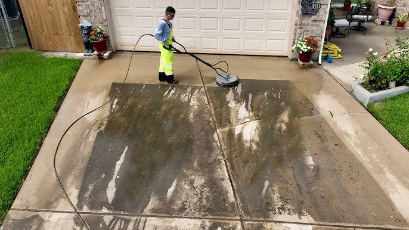
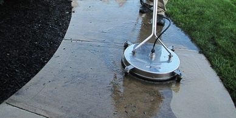
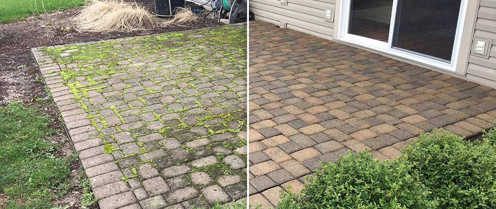

Trusted By Dallas Homeowners
Driveways, patios, sidewalks, siding, and fences — blasted clean of dirt, grime, mold, and mildew so your property looks brand new.
Years of Texas heat, pollen, and rain leave driveways, patios, and siding covered in grime, algae, and hard water stains. We use commercial-grade pressure washing equipment with surface-safe techniques and pressure settings dialed in for each material.



Tell us what needs cleaning — driveway, patio, siding, or fence — and we'll quote it fast.
We pretreat tough stains, then wash with surface-appropriate pressure and cleaning solution.
A final rinse and walkthrough confirms every surface is clean before we leave.
Sidewalk Cleaning
Driveway Cleaning
Exterior Home Cleaning
Fence Cleaning
Not when it's done right. We match pressure levels and nozzle types to each surface — concrete can handle higher pressure than siding, wood, or painted surfaces, which need a gentler touch.
Once a year is typical for most Dallas homes, though shaded, moisture-prone areas that grow algae or moss faster may benefit from cleaning every 6-9 months.
Yes. We use cleaning solutions that are safe for surrounding plants and grass, and take care to rinse and protect landscaping near the work area.
Concrete and pavers are typically dry to the touch within a few hours, though full cure time depends on sun exposure and humidity that day.